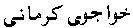
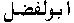

[Top] -- Persian Cataloging Page
Persian Cataloging PageGuidelines for Cataloging Persian Materials
Izafah: final (i) preceded by a hyphen. In romanizing Persian words (-i) is added to the word which ends in consonant and (-yi) when the word ends in a vowel. Examples: Khanah-i , darya-yi. Izafah is not indicated between the elements of compound personal names except when it is expressly indicated in the Persian Orthography. Example:  is romanized as Khvaju-yi Kirmani. When the article functions as the middle element of a phrase or compound word or name it is kept with the name or the word. al is sometimes abbreviated as l. Romanize l as la if it precedes a name. Example:  is romanized as Abu Lafazl. Arabic word ibn or bin "son of" occurring in names of the Islamic type usually appear in Persian Orthography as ibn at the beginning of a name and as bin (abbreviated in the middle of the name). are romanized according to the rules for Arabic and Persian as appropriate.
[Top] -- Persian Cataloging Page |